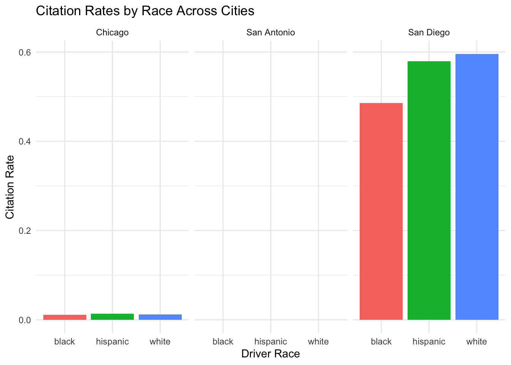
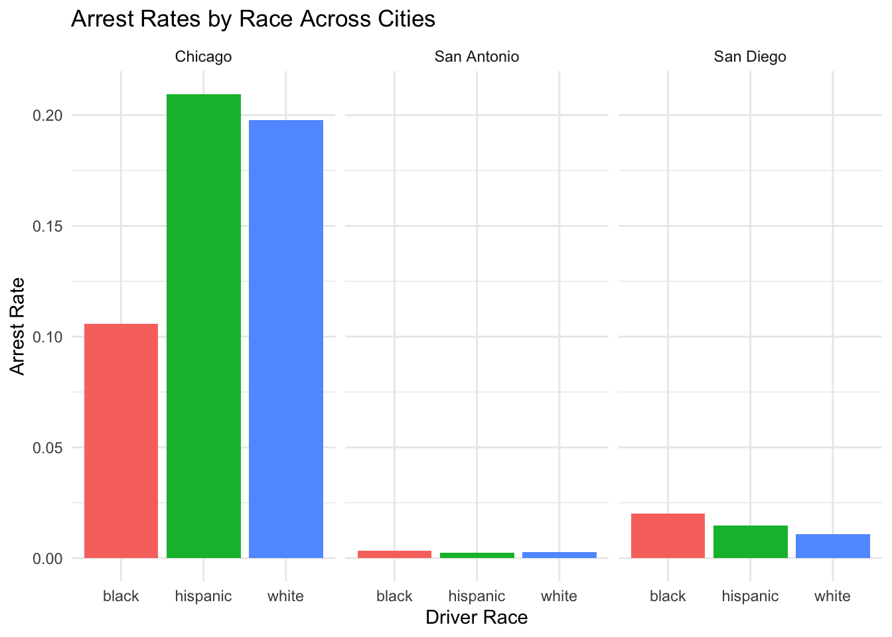
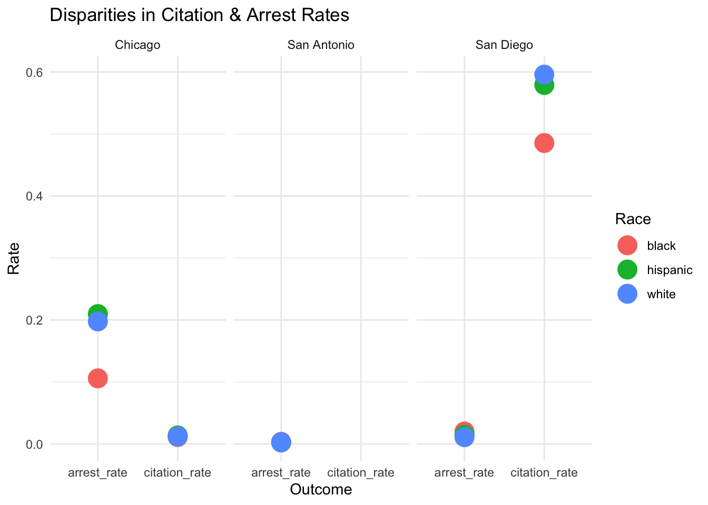

show code
library(RMariaDB)
library(DBI)
con_traffic <- DBI::dbConnect(
RMariaDB::MariaDB(),
dbname = "traffic",
host = Sys.getenv("TRAFFIC_HOST"),
user = Sys.getenv("TRAFFIC_USER"),
password = Sys.getenv("TRAFFIC_PWD")
)This project analyzes traffic stop data from the Stanford Open Policing Project to compare policing patterns across San Diego, Chicago, and San Antonio. By examining stop composition, search rates, and stop outcomes for Hispanic, Black, and white drivers, the analysis highlights how these experiences differ across cities.
Evelyn Salgado
December 1, 2025
Citations
Pierson, E., Simoiu, C., Overgoor, J., Corbett-Davies, S., Jenson, D., Shoemaker, A., Ramachandran, V., Barghouty, P., Phillips, C., Shroff, R., & Goel, S. (2020). A large-scale analysis of racial disparities in police stops across the United States. Nature Human Behaviour, 4(7), 736–745. https://doi.org/10.1038/s41562-020-0858-1
Stanford Open Policing Project. (2020). Traffic stop data (Standardized datasets) [Data set]. Stanford Computational Policy Lab. https://openpolicing.stanford.edu/data/
Introduction: In this project, I aim to explore the differences in traffic stop patterns involving Hispanic, Black, and white drivers across three major cities: San Diego, Chicago, and San Antonio to understand policing patterns. Using a compilation of the Stanford Open Policing Project data, I will examine three main components for my analysis. First, I will look at stop composition, the number of stops involving Hispanic, Black, and White drivers. The second is the search rates: how often Hispanic, Black, and White drivers are subjected to searches after being stopped. The third is the outcome of the stop (citation, warnings, arrests, other). Finally, I will create visualizations to summarize my findings and to better illustrate how policing practices differ across the three cities. By conducting this analysis, we can better understand racial disparities in policing and evaluate whether similar demographic groups are treated differently across major U.S. cities.
Research Question: How do racial disparities in traffic spots vary across San Diego (CA), Chicago (IL), and San Antonio (TX) for Black, Hispanic, and White Drivers?
First, we must understand the proportion of drivers stopped in each city.
Counting Total Vehicular Stops by Race for Each City
Chicago: Black drivers are the most frequently stopped in Chicago. Hispanic drivers are the second most stopped. White drivers, excluding NA values, are the 3rd most frequently stopped.
| subject_race | count |
|---|---|
| black | 868099 |
| hispanic | 358907 |
| white | 209901 |
San Diego: Hispanic drivers make up the 2nd largest proportion of stops in San Diego, with White drivers being the most frequently stopped. Black drivers are the 3rd most frequently stopped.
| subject_race | count |
|---|---|
| white | 162226 |
| hispanic | 117083 |
| black | 42705 |
San Antonio: Hispanic drivers make up the most frequent number of stops in San Antonio, followed by White drivers. Notably, there are fewer number of NA values recorded for San Antonio. Black drivers are the 3rd most frequently stopped in San Antonio.
| subject_race | count |
|---|---|
| hispanic | 568800 |
| white | 382165 |
| black | 105989 |
Interpretation: Across the three cities, Chicago has a higher number of stops for Black drivers, San Diego has a higher number of stops for White drivers, and San Antonio has a higher number of stops for Hispanic drivers.
Next, I will examine search rates, meaning how often drivers of each racial group are searched after being stopped to asses potential disparities in policing practices once someone is stopped.
Search Rates for Drivers by City
Chicago: Search proportions for Black drivers is ~0.98%, while for Hispanic drivers its ~0.81%, and ~0.27% for White drivers.
| subject_race | Num_Searches | Total_Num_Stops |
|---|---|---|
| black | 8533 | 869647 |
| hispanic | 2919 | 359121 |
| white | 586 | 210274 |
San Diego: Out of 117083 stops made for Hispanic drivers in San Diego, 6501 of them resulted in a vehicular search, approximately 5.5%. The Hispanic search proportion (5.5%) is almost twice as high as that for White drivers (4510/162226 = ~2.7%) but almost half of that for Black drivers (3873/42705 = 9.06%).
| subject_race | Num_Searches | Total_Num_Stops |
|---|---|---|
| hispanic | 6501 | 117083 |
| white | 4510 | 162226 |
| black | 3873 | 42705 |
San Antonio: Hispanic proportion of searches is ~0.86% in San Antonio, while the Black proportion of searches is ~1.45% and for White drivers it is ~0.92%.
| subject_race | Num_Searches | Total_Num_Stops |
|---|---|---|
| hispanic | 5487 | 633919 |
| white | 4548 | 490230 |
| black | 1913 | 131762 |
Interpretation: Across the 3 cities, the proportion of drivers who are searched after being stopped is higher for Black and Hispanic drivers than White drivers. It is especially interesting as in San Diego, where White drivers are the most frequently stopped but are the least searched after having been stopped, while Black drivers are the least frequently stopped yet the most proportionality searched if they are stopped. Overall, In the three cities, Black drivers tend to have the highest proportion of searches even if they are not the most frequently stopped (such as in San Diego and San Antonio). Hispanic drivers, in the three cities examined here, tend to be searched at a proportion rate higher than White drivers but lower rate than Black drivers.
How do Stop outcomes differ by race?
To examine the outcome of these stops, I want to analyze outcomes with two measures: proportions of stops that resulted in a citation and proportion of stops that resulted in an arrest.
Chicago: Citation rates are similar across races but arrest rates are substantially higher for Hispanic and White drivers. This may indicate that while citations are issued at similar rates, the escalation to arrest heavily varies.
| subject_race | total_stops | total_citations | total_arrests |
|---|---|---|---|
| black | 869647 | 9740 | 91993 |
| hispanic | 359121 | 4900 | 75228 |
| white | 210274 | 2530 | 41556 |
Of the total number of black drivers stopped in Chicago, ~1.12% received a citation, and ~10.58% were arrested. For Hispanic drivers ~1.36% received a citation, and ~20.9% were arrested. For White drivers ~1.20% received a citation, and ~19.7% were arrested.
San Diego: White and Hispanic drivers seem to receive citations at similar rates while Black drivers have a lower citation rate but a noticeably higher arrest rate. This suggests a different pattern of escalation than Chicago, as Black drivers seem to be less likely to get a citation but more likely to be arrested.
| subject_race | total_stops | total_citations | total_arrests |
|---|---|---|---|
| white | 162226 | 96631 | 1771 |
| hispanic | 117083 | 67787 | 1714 |
| black | 42705 | 20728 | 857 |
Of the total number of black drivers stopped in San Diego, ~48.54% received a citation, and ~2.01% were arrested. For Hispanic drivers ~57.9% received a citation, and ~1.46% were arrested. For White drivers ~59.5% received a citation, and ~1.09% were arrested.
San Antonio: Arrest rates are low across all groups, but Black drivers are arrested at the highest proportion. Importantly, San Antonio’s data set likely records every stop as a citation thus the citation rate comparisons are not possible for this city (total_stops = total_citations as can be seen below.) Only arrest rates can be computed for this city, not citation rates.
| subject_race | total_stops | total_citations | total_arrests |
|---|---|---|---|
| hispanic | 633919 | 633919 | 1534 |
| white | 490230 | 490230 | 1342 |
| black | 131762 | 131762 | 443 |
The arrest rate for White drivers is ~0.27%, for Hispanic drivers its ~0.24%, and ~0.34% for Black drivers.
Overall Interpretation: Across the three cities, racial disparities in outcomes vary heavily. Chicago shows relatively similar citation rates across the three racial groups but higher arrest rates for Hispanic and White drivers. San Diego seems to have balanced citation rates among Hispanic and White drivers but lower citation rates for Black drivers, yet Black drivers also have the highest arrest rate. In San Antonio there are relatively low arrest rates but of the three racial groups, Black drivers have the highest proportion of arrests.
Overall, there is no clear pattern that applies in how stops lead to a specific outcome. Instead, each city shows a set of disparities, suggesting that the outcome of a driver being stopped depends on both where the stop occurs and the race of the driver.
Data Visualizations: Outcomes by City and Race
Chicago
total_stops citation_rate arrest_rate city
1 869647 0.01119995 0.1057820 Chicago
2 359121 0.01364443 0.2094781 Chicago
3 210274 0.01203192 0.1976279 ChicagoSan Diego
total_stops citation_rate arrest_rate city
1 42705 0.4853764 0.02006791 San Diego
2 117083 0.5789653 0.01463919 San Diego
3 162226 0.5956567 0.01091687 San DiegoSan Antonio
subject_race arrest_rate citation_rate
1 black 0.003362123 NA
2 hispanic 0.002419868 NA
3 white 0.002737491 NACitation Rates Plot: The following visualization shows citation rates by race across the three cities. San Diego issues citations at notably higher rates for all groups, Chicago maintains very low citation rates overall, and San Antonio does not report citation data for this data set.
citations_only <- cities |>
select(city, subject_race, citation_rate)
ggplot(citations_only, aes(x = subject_race, y = citation_rate, fill = subject_race)) +
geom_col() +
facet_wrap(~ city) +
labs(
title = "Citation Rates by Race Across Cities",
x = "Driver Race",
y = "Citation Rate"
) +
theme_minimal() + theme(legend.position = "none")
Arrest Rates Plot: Arrest rates vary more sharply across cities. Chicago shows much higher arrest rates than San Diego and San Antonio, while both of the latter cities maintain very low arrest rates across all racial groups.
arrests_only <- cities |>
select(city, subject_race, arrest_rate)
ggplot(arrests_only, aes(x = subject_race, y = arrest_rate, fill = subject_race)) +
geom_col() +
facet_wrap(~ city) +
labs(
title = "Arrest Rates by Race Across Cities",
x = "Driver Race",
y = "Arrest Rate"
) +
theme_minimal() + theme(legend.position = "none")
Disparities Plot: This plot highlights the size of the gap between citation and arrest rates for each racial group in each city, showing where those differences are largest.

Conclusion: Overall, this analysis helped highlight meaningful differences in policing patterns across the three cities. Even though Black and Hispanic drivers were not always the most frequently stopped, they often faced higher citation or arrest rates than white drivers. The visualizations illustrated these patterns by separating citation and arrest outcomes and showing how these rates vary by race within and across cities. It is important to note that the analysis was limited because the San Antonio data set did not include citation information, which restricts direct comparisons. Overall, the results suggest that enforcement practices are not applied evenly and that racial groups experience different outcomes even under similar stop conditions.